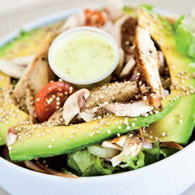

Welcome to Recetas de comida rapida
92 ideas de Comidas rápidas, deliciosas y novedosas... | comida, comida rapida, recetas para cocinar
2021.12.16 15:47
Privacidad
Comidas rápidas, deliciosas y novedosas
92 Pines 1 a Colección de Monenito Ramírez CompartirIdeas parecidas populares ahora
Platos Fáciles Comida Y Bebida Recetas Comidas Rápidas Recetas De Huevo Para El Desayuno Recetas De Lonchera Ideas De Lunchbox Recetas Vegetarianas De Alta Proteína Recetas Saludables Platos Fáciles 14 Easy Lunchbox Ideas Kids and Adults Will Obsess Over Aperitivos Recetas Fáciles De Comida Recetas Deliciosas Bocados Pastelitos Panecillos Comidas Bocadillo Mantequilla MASA CASERA: para Empanadas de Horno receta fácil para preparar, Si te gusta dinos HOLA y dale a Me Gusta MIREN… | Receitas Soberanas MASA CASERA: para Empanadas de Horno receta fácil para preparar. #masa #empanadas #horno #masacasera #facil #panfrances #pain #bread #breadrecipes #パン #хлеб #brot #pane #crema #relleno #losmejores #cremas #rellenos #cakes #pan #panfrances #panettone #panes #pantone #pan #recetas #recipe #casero #torta #tartas #pastel #nestlecocina #bizcocho #bizcochuelo #tasty #cocina #chocolate Si te gusta dinos HOLA y dale a Me Gusta MIREN Hamburguesas Con Queso Cocina Fácil Recetas Para Cocinar Recetas De Comida Recetas Deliciosas Comida Deliciosa Alimentos Saludables Comida Saludable Platos De Verano 31 Grilling Recipes for Summer It's too hot to cook indoors! Fire up that grill and try one of these 31 Grilling Recipes for Summer! Your air conditioning bill will thank you. Show Me the Yummy Comidas rápidas, deliciosas y novedosas 2:58 Recetas De Comidas Ricas Recetas Desayuno Recetas Comida Rapida Comida Sabrosa Recetas Fáciles De Comida Comida Deliciosa Videos De Comida Comida Divertida Comidas Faciles 5 Grilled Cheese Recipes Grilled Cheese 5 Ways. The last one would make a great Fall weeknight dinner. Tasty Comidas rápidas, deliciosas y novedosas Cenas Rápidas Comidas Para Niños Recetas Comida Rapida Recetas Fáciles De Comida Recetas Deliciosas Comidas Ricas Aperitivos Comida Deliciosa Ingredientes 5 cenas rápidas con barras de pan | Pequeocio 5 cenas rápidas con barras de pan Recetas Comida Rapida Comida Sabrosa Comidas Dulces Dulces Y Salados Recetas Fáciles De Comida Recetas Deliciosas Comidas Ricas Comida Deliciosa Hamburguesas Rellenas Alguno ya había pasado por aquí. FinoFilipino.org — Alguno ya había pasado por aquí. 1:44 Recetas Comida Rapida Comida Sabrosa Recetas Fáciles De Comida Recetas Deliciosas Comidas Ricas Comida Deliciosa Recetas Saludables Comida Saludable Aperitivos Lasagna Party Ring Recipe by Tasty Lasagna Party Ring Tasty Comidas rápidas, deliciosas y novedosas Comida Vegetariana Comida Postres Bocadillos Comida Deliciosa Recetas De Cocina Recetas Divertidas Nuevas Recetas Sándwiches De Carne Ollas Para Cocinar Slow Cooker Italian Beef Sandwiches Picoteos Dulces Receta Crepes Postres Gourmet Bocados Recetas Para Cocinar Recetas De Cocina Pasteles Panaderia Y Reposteria Delicias Dulces How To Make the Best Rugelach Cookies How To Make the BEST Rugelach Cookies. We LOVE this classic Christmas cookie recipe and break it down step by step so they're EASY to make at home. You can fill them with anything from ground nuts and honey to peanut butter and chocolate. Honey, cinnamon and walnut is a classic filling - as is raspberry jam. This belongs on your recipes to make list! Comidas Con Pollo Comidas Para Cenar Recetas De Aperitivos Amantes De La Comida Recetas De Comida Mexicana Recetas Mexicanas Almuerzos Comida Étnica Revistas De Cocina Easy Chicken Empanadas Comida Sin Carne Hamburguesas Comida Saludable Recetas Para Cocinar Comidas Ricas Recetas Saludables Alimentos Embutidos Ensaladas Recetas Meatball Parmesan Burgers {low carb option} Meatball Parmesan Burgers - transform the classic Italian comfort food recipe into a juicy hamburger topped with tomato sauce and cheese on a portobella mushroom bun to make them low carb and gluten free. | cupcakesandkalechips.com Show Me the Yummy Comidas rápidas, deliciosas y novedosas Cocina Saludable Comida Vegetariana Comida Sana Recetas Saludables Alimentos Calabacin Recetas Aperitivos Recetas Para Cocinar Postres Receta: Lasaña de calabacín, pavo y queso. Lasaña de calabacín, pavo y queso / 1 calabacín •Lonchas de pavo o jamón york. •Lonchas de queso bajo en grasa (-40%) •Queso rallado bajo en grasa •Tomate natural triturado •Orégano Aperitivos Culinarias Recetas Deliciosas Comida Deliciosa Comida Bebida Recetas Para Cocinar Recetas De Cocina Ensalada Pollo Postres 16 Deliciosas recetas de sándwiches tan fáciles que no te lo vas a creer sándwichs Aperitivos Recetas Fáciles De Comida Recetas Deliciosas Comidas Ricas Comida Deliciosa Especias Recetas Comida Rapida Comida Creativa Comida Italiana Cheesy Pepperoni Pizza Sticks Just 6 ingredients and the kids will love 'em! Blogger I Wash You Dry prepares these Cheesy Pepperoni Pizza Sticks as a quick and easy after-school snack for her kids. · 20 min My Dominican Kitchen Comidas rápidas, deliciosas y novedosas Sandwiches Saludables Recetas Fáciles De Comida Comidas Ricas Comida Deliciosa Aperitivos Desayuno Sándwiches Gourmet Recetas De Sandwich Antojos De Comida Spicy Italian Panini · 15 min Comida Niños Recetas Para Cocinar Pizzas Recetas Ricas Cocinas Recetas De Pizza Recetas De Entrantes Ideas Para Cenas Comidas Preparadas Con Anticipación How to Make Frozen Pizzas (homemade freezer pizza) Step by step guide to making and freezing homemade frozen pizzas so you can enjoy them later! A freezer meal the whole family will love :) Ashley | The Recipe Rebel Comidas rápidas, deliciosas y novedosas Asado Receta Recetas De Cocina Platos Bebida Choripan Argentino Asado Argentino Restaurantes De Comida Comidas Rápidas Cartas De Bar Inicio - Suscripciones Publicaciones Semana Choripan con chimichurri, Recetas - Edición Impresa CocinaSemana.com - Últimas Noticias Recetas Para Cocinar Platos Comida Pizzas Recetas De Carne De Ternera Recetas De Cocina Cocinar Tocino Recetas De Hamburguesa Sándwiches Pizza Sloppy Joes Pizza Sloppy Joes - A delicious homemade sloppy joe with all the flavor of pizza! It's a quick and easy 30 minute dinner recipe perfect for busy families! Diary of a Recipe Collector Comidas rápidas, deliciosas y novedosas Masa Para Empanadas Fritas Con Carne Recetas Fáciles De Comida Recetas Deliciosas Comidas Ricas Aperitivos Postres Dulces Panecillos Como preparar la masa para empanadas fritas - Laylita.com Masa casera de empanadas fritas Marisol Jara Comidas rápidas, deliciosas y novedosas Ensalada De Repollo Carne Molida Embutidos Postres Cocina Fácil Bocadillos Recetas Comida Rapida Recetas Para Cocinar Recetas De Hot Dog Carolina-Style Slaw Dogs Carolina-Style Chili Slaw Dogs · 40 min Spicy Southern Kitchen| Christin Mahrlig Comidas rápidas, deliciosas y novedosas Tacos De Pollo Recetas Recetas Para Cocinar Sándwiches De Miga Comida Mejicana Platos Fuertes Rapido Y Facil Recetas Mexicanas Comer Bien Platos Principales Shredded Chicken Tacos Quick and easy shredded CHICKEN TACOS recipe that makes a simple 30 minute meal, using basic ingredients . These Mexican chicken tacos can be made on the stovetop or slow cooker. {Ad} From cakewhiz.com Cake Whiz Comidas rápidas, deliciosas y novedosas Emparedados Sandwiches Pastel De Dulces Fritas Bocadillos Recetas Deliciosas Comida Deliciosa Recetas Para Cocinar Recetas De Cocina Comidas Ricas Brisket Grilled Cheese Brisket Grilled Cheese - The most delicious way to use up leftover brisket! · 15 min Spicy Southern Kitchen| Christin Mahrlig Comidas rápidas, deliciosas y novedosas Platos De Pasta Comida Casera Pizzas Comida Postres Comida Deliciosa Recetas Para Cocinar Recetas De Cocina Comidas Ricas Recetas Saludables Stromboli satisfy your pizza cravings in 35 minutes or less with No Wait No Rise Stromboli AKA rolled up pizza! Step by step tutorial of how to make EASY stromboli. A family favorite instant meal or must have appetizer. #stromboli #pizzadough #30minutemeals Carlsbad Cravings Comidas rápidas, deliciosas y novedosas Bocadillos Comida Compartir Kentucky Derby Deslizador De Sándwiches Sándwiches Horneados Sándwiches Receta De Cocina Kentucky Hot Brown Sliders KENTUCKY HOT BROWN SLIDERS are a twist on the classic open-faced sandwich that features turkey, bacon, tomatoes and a Pecorino Romano cheese sauce! Show Me the Yummy Comidas rápidas, deliciosas y novedosas Salsa Para Tacos De Pollo Recetas De Aperitivos Recetas De Comida Mexicana Pico De Gallo Almuerzos Recetas Favoritas Cinco De Mayo Comida Deliciosa Fiesta Chicken Taco Dip - 365 Days of Baking and More This Chicken Taco Dip with refried beans, chicken, @shamrockfarms Zesty Jalapeño Sour Cream and cheese is a perfect addition to your Cinco De Mayo menu. #ad 365 Days Of Baking & More | Easy Family Recipes to Bake And Cook Comidas rápidas, deliciosas y novedosas